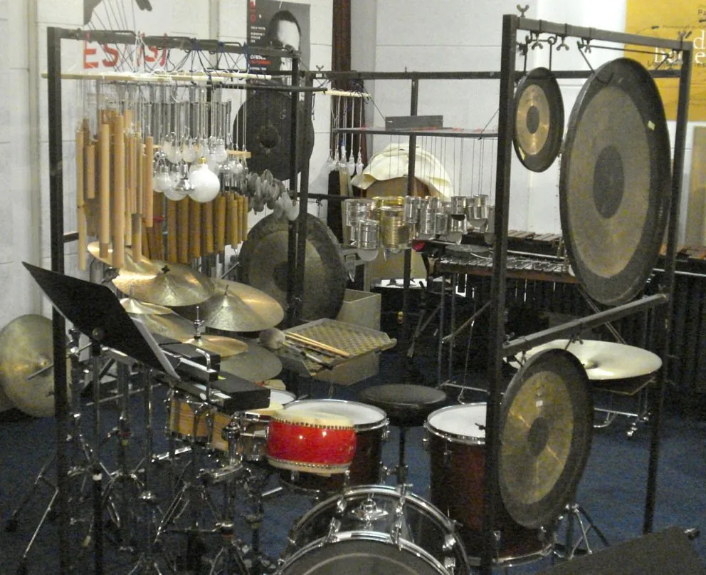
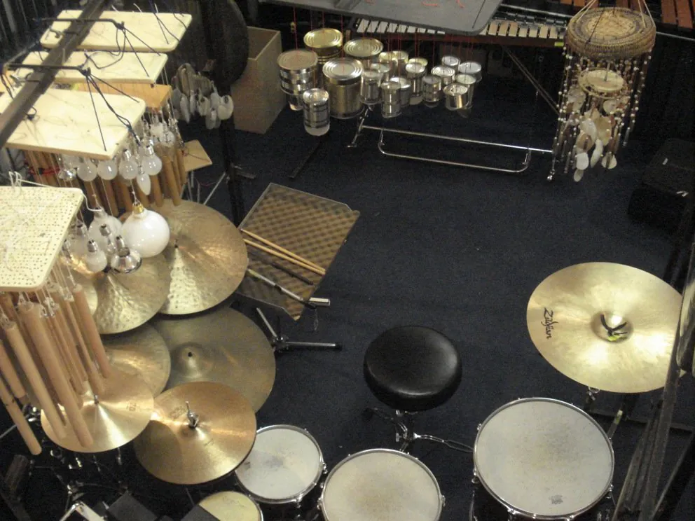
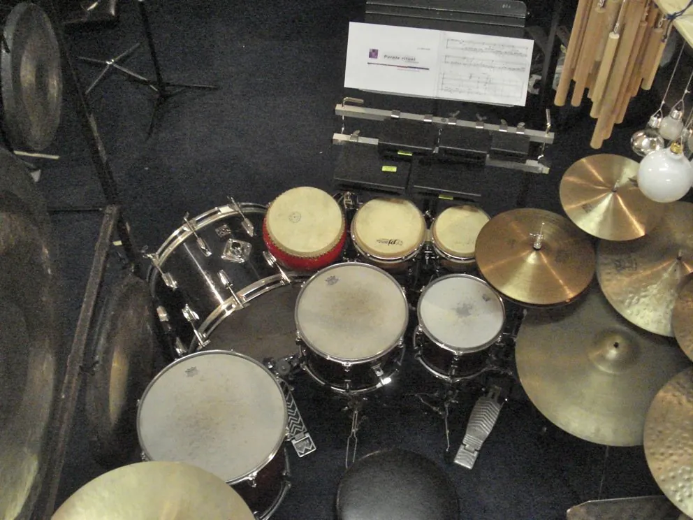
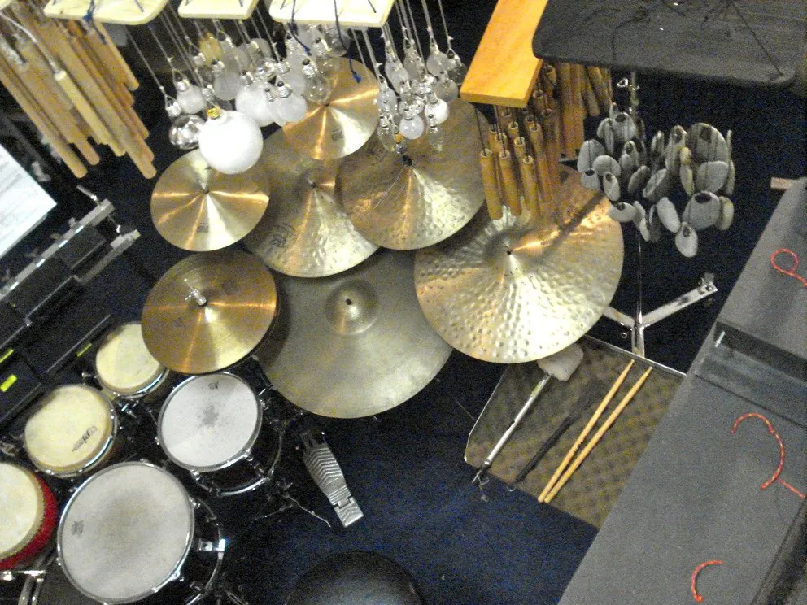

for multi percussion
Editions Papillon, Genève
Photos of the set-up used as a basis by some performers during the Geneva International Music Competition, 1st round preliminary, October 2009. Click to enlarge.




Set-up featuring: Wood chimes, Glass chimes (lamp bulbs), Metal can chimes, Seashell chimes, Tam-tams, 8 Cymbals, Bongos, Tom-toms, Bass drum
Geneva Competition 2009 — Unimail
Geneva International Music Competition, October 2009
▶ Watch on YouTube
Photos of the special Chimes used as a basis during the Geneva Competition, October 2009.
Have a look at the “Wood chimes” (set A & B only), “Stone chimes”, “Metal cans chimes” & “Glass chimes”!
All compositions are protected by S.A.B.A.M. (Belgium) and U.C.M.R.A.D.A. (România) — © All rights reserved.